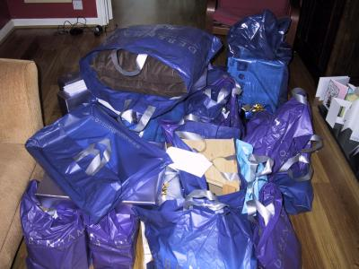

Thursday, September 26, 2002Another retro blog: Thursday 5th September
After checking that we'd got all the essential items (dress, suit, rings, banns certificate) at least twice, we headed off to Hull. We had a good journey (travelling on a weekday was a big improvement) and arrived in Hull at 3.15pm. Of course, one of the things I'd forgotten to bring with me were the keys to my Parent's house, so we had to sit in the garden for 15 minutes or so until they got back from shopping.
Rich's folks were also travelling today, and arrived at the Humber Crown hotel (where they'd stay for the next 2 days) at 6ish. To save them any more driving, Mum, Dad, Rich and I headed off there to meet them and we had a bar snack and a few drinks with them to welcome them to Hull.
Posted by Jane at 12:27 PM
And another retro blog: Wednesday 4 September
Last night I went to collect my dress. I tried it on and found that the underskirt was about 4 inches longer than the dress. I didn't feel like a Princess that's for sure. So, I get to go back this evening to pick it up. I just hope it is right this time!
Later:
Posted by Jane at 8:39 AM
Well, this time the dress was right, so I left with it. Phew! Big relief!
Wednesday, September 25, 2002Another retro blog: Tuesday 3 September
Dad rang today to tell me that he'd opened the cakes up to have their 72 hours of hardening time. He told me was up at 6 this morning writing his speech as he couldn't sleep - poor guy.
I go to pick my dress up this evening. I can't wait to have it although I will have to hide it so Rich can't see it.
Posted by Jane at 8:38 AM
Tuesday, September 24, 2002We got our official wedding photos back today, and some of them are cracking. There are some wonderful photos of our friends and family, and even some halfway decent ones of the two of us together - shocking! We'll scan some of them in and put them up soon so that the people that we don't get to take the books to can have a look and see if there are any they'd like to buy from the photographer.
Posted by Jane at 6:20 PM
Monday, September 23, 2002The first of the retro-blogs: Saturday 31st August
One week to go... I'm constantly touched my my friend's support at this time. This morning, Karen posted me back some CDRoms she'd borrowed a while ago, and in the envelope she sent me a CD she'd found "The Ultimate Hen Night Party Album". She said that she thought I'd escaped without the usual tack for my hen night, so she thought I should at least have a CD to dance to .
And Steff has been a star, she's done sewing, made a present for us, and is also organising a guest book for us. She's not good at surprises though, as 2 of these were meant to be surprises and she just had to tell me , mind you to be fair, the guest book was in case we'd already organised something.
I got so hassled printing the Order of Services yesterday that I figured I'd treat myself to a massage, so I'm heading off for a back and shoulder massage later. Lovely!
We've been working through our CD collection, finding suitable music for playing whilst we're eating dinner, and also for playing in the evening before the band, and during their breaks. We've found 33 tracks for the evening, Karen's CD has produced 6 or 7 for us as well so again, Thanks K.
I also have a nice shiney engagement ring again, Rich took it in to be cleaned yesterday. It's incredible how much more bright and sparkly it looks again now.
Posted by Jane at 9:23 PM
Saturday, September 21, 2002Debenhams delivered our first batch of presents today... we now need a bigger house . We're still a bit overwhelmed by the generosity of all our friends, so thank you again.
Posted by Jane at 8:53 PM
Sunday, September 01, 2002So, we're married... over the next few weeks we'll post bits and pieces about the wedding, the run up to the wedding and about our honeymoon. But, in the meantime just to say a big Thank You to everyone who trekked up to see us, and to make our day so special. We had a great time, and hope you did too. If any of you have any photos to share, we'd love to see them.
Posted by Jane at 11:30 AM
On Friday I was walking around town: in one pocket I had a diamond ring; in another pocket I had a stack of foreign currency; and over my arm I had a brand new hand-tailored suit. For a moment I thought I was some kind of international man of mystery, until I realized I didn't have a Walther PPK on me.
Posted by Richard at 1:12 PM
{kind=link}